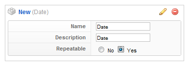
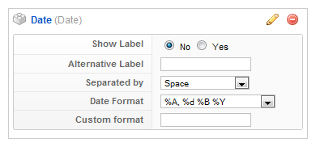
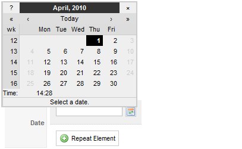

Date Element
In this tutorial you learn how to configure a date element with its specific values to use it in the ZOO extension.
How you create an element like this, we show you in {doc: create-new-types text: this tutorial}.
1. Configuration

In this tutorial you learn how to configure a checkbox element with its specific values to use it in the ZOO extension.
Here is the description of the different values:
Name: Type in the name for this element which will be used later on, for example in the item creation view or as label in the frontend. With the name you also can identify the element, when you assign it to a template position.
Description: The description will show up as a tooltip in the item creation view
Repeatable: When you activate this option you will be able to easily generate new fields of this kind in the element creation view (see step 3).
2. Element Assignment

Every element has to be assigned to a template position to show up for the visitors in the frontend of the site. See {doc: assign-elements-to-layout-positions text: this tutorial} how to assign elements to the template positions.
You can set whether the label is shown in the frontend or not. If you choose "Yes" the name of the element (see previous step) is used for it. If you do not want to use the elements name as label you can type in an alternative. Of course the "Show Label" option have to be enabled to show the alternative label.
If you activated the Repeatable option in step 1 you can choose how the values are separated in the frontend. You can choose between different chars like comma or pipe or the values can be wrapped by a html tag like a div or a li.
With the date format you can choose, how the date is shown to the visitors. See this site for an explanation of the values. If you set this selectbox to "custom format" and type in the last field an own format following the same rules.
3. Item Creation

This is how the element looks when you create an item. See {doc: create-and-manage-items text: this tutorial} for creating an item. If you had activated the Repeatable option in step 1, you can see the "Repeat Element" button. When you click on it, another field of this kind appears.

When you click on the small calendar icon, a calendar pop up will show and you can select a date very easily.